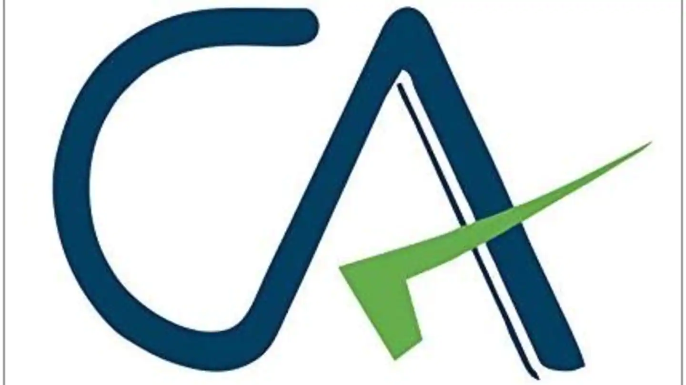

Chartered Accountant is Accounting
He was born in a small village in Tamil Nadu on 24th June 1975.
He had a goal to become a Chartered Accountant to fulfill his grandfather's wish.
Finally, he achieved his goal and fulfilled the dream of his grandfather of having a person in his family as Chartered Accountant, in the year 2002.
Anu Satheesh is his wife. Abhinav Satheesh is his son. His father and mother are Bharathan Ramaswamy and Vijaya Bharathan. Raghuram Bharathan is his brother.
Currently, he works at SFO Technologies as General Manager-Finanace.